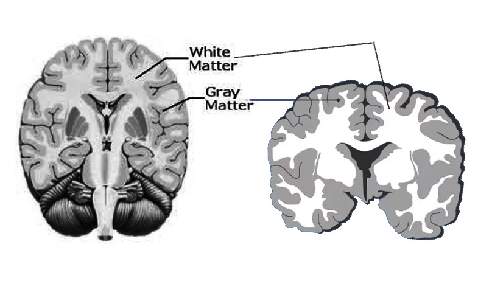
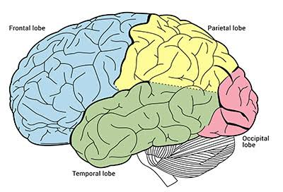
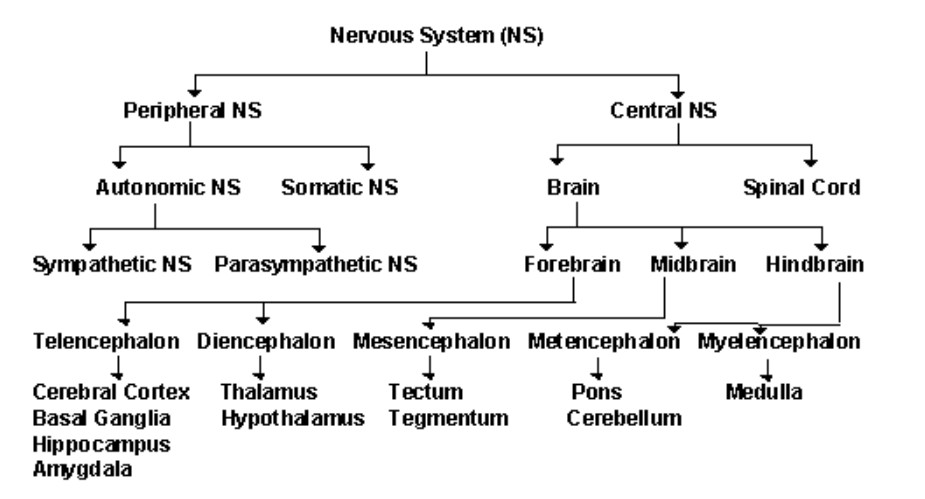

01 · Orientation
1.1 Overview
The brain is the control centre of the nervous system and the most complex organ in the human body. It continuously receives information from both the external environment and the body itself, processes that information, and coordinates appropriate responses.
Although the brain weighs only approximately 2.6 to 3.1 lb, or about 2% of total body weight, it contains an estimated 86 billion neurons connected by hundreds of trillions of synapses. Together, these cells form an intricate network capable of processing enormous amounts of information every second.
Rather than functioning as a single uniform structure, the brain is organized into numerous specialized regions and interconnected networks. Different areas are responsible for processing sensory information, controlling movement, regulating emotions, forming memories, and making decisions. Despite these specialized roles, the regions rarely work in isolation; complex behaviours and cognitive processes emerge through communication between many different areas of the brain.
Advances in neuroscience over the past century have dramatically improved our understanding of the brain. However, many aspects of this topic remain poorly understood, making it one of the most active and exciting areas of scientific research.
02 · Reference
1.2 Brain Glossary
Core organizational terms used throughout this section.
- Central nervous system
- The brain and spinal cord.
- Peripheral nervous system
- All nerves that branch out from the brain and spinal cord to the rest of the body.
- Autonomic nervous system
- The involuntary branch of the nervous system that regulates internal processes through its sympathetic and parasympathetic divisions.
- White matter
- Areas in the brain and spinal cord that consist primarily of myelinated axons.
- Grey matter
- Brain tissue made up of neuron cell bodies, dendrites, and synapses. It is where processing and decision-making happen.
- Blood-brain barrier
- A highly selective semipermeable membrane that separates circulating blood from the brain to protect it from exogenous toxins and chemicals.
03 · Explore
Brain Structure and Organization
Explore the brain from broad organization to individual cortical and subcortical regions.
1.3 The Cerebral Cortex
The cerebral cortex is the thin outer layer of the cerebrum and is composed primarily of grey matter. Although it is only about 2–4 mm thick, it supports many higher-order functions, including conscious perception, voluntary movement, language, reasoning, planning, learning, and memory.
The cortex is folded into raised ridges called gyri and grooves called sulci; particularly large grooves are called fissures. This folding greatly increases cortical surface area, allowing an enormous number of neurons and connections to fit within the skull. Estimates vary with the method used, but the unfolded cortical surface spans roughly 2,000–2,500 cm2.
Grey matter contains neuronal cell bodies, dendrites, synapses, and supporting glial cells. It is a major site of information processing and integration and is found in the cerebral cortex as well as several deep brain structures, including the basal ganglia and thalamus.
White matter consists mainly of bundles of myelinated axons that connect different areas of the brain and spinal cord. Myelin gives this tissue its pale appearance and increases the speed of electrical signal transmission. In simple terms, grey matter performs much of the processing, while white matter provides the communication pathways that connect distributed regions.

1.4 The Two Cerebral Hemispheres
The cerebrum is divided into left and right cerebral hemispheres. The two sides communicate continuously through the corpus callosum, a large bundle of white-matter fibres that allows information to be exchanged and integrated.
Each hemisphere primarily controls and receives sensory information from the opposite side of the body. For example, movement of the right arm is initiated mainly by the left motor cortex, while sensory information from the left side of the body is processed largely by the right somatosensory cortex. This arrangement is called contralateral organization.
Some functions show hemispheric lateralization. In most people, left-hemisphere networks play a greater role in language, while right-hemisphere networks contribute strongly to visuospatial processing, facial recognition, and aspects of emotional interpretation. This specialization is not absolute: language, memory, decision-making, emotion, and other complex behaviours depend on coordinated activity across both hemispheres.
1.5 The Four Cortical Lobes
- Frontal lobe — responsible for executive function, decision-making, planning, impulse control, and related processes.
- Occipital lobe — responsible for vision.
- Parietal lobe — responsible for tactile function and somatosensory information.
- Temporal lobe — responsible for auditory signals, gustation, emotion, memory, and related processes.

1.6 Important Brain Regions
- Brainstem — responsible for vital autonomous functions such as breathing, consciousness, blood pressure, heart rate, and sleep.
- Cerebellum — responsible for the control of fine motor movements, but not initiating movement.
- Basal ganglia — a group of brain structures involved in coordinating movement and regulating habit formation, learning, emotion, and addiction.
- Hypothalamus — produces hormones and influences feeding, behaviour, sleeping, and other homeostatic functions.
- Corpus callosum — allows communication between the two hemispheres.
- Pineal gland — responsible for controlling the body's circadian rhythm among other things.
- Thalamus — a relay station that redirects sensory information into the cortex and acts as a gate for what stimuli reaches conscious attention.
- Hippocampus — responsible for memory storage and neurogenesis.
- Amygdala — responsible for processing fearful and threatening stimuli and works with the hippocampus to consolidate stressful or traumatic memories and experiences.
1.7 The Blood-Brain Barrier (BBB)
The blood-brain barrier is a highly selective interface between circulating blood and the brain’s extracellular environment. Its primary role is to maintain a stable neural environment by regulating which substances can enter brain tissue.
Unlike most blood vessels in the body, brain capillaries are lined by endothelial cells joined by tight junctions. Together with specialized transport systems and supporting cells, these junctions strongly restrict movement from the bloodstream while still allowing essential nutrients to reach the brain and metabolic waste to leave it.
The area postrema, a small region of the medulla oblongata, is one of several circumventricular organs with more permeable blood vessels than most brain tissue. This allows it to monitor circulating substances and help initiate protective responses such as nausea and vomiting when potentially harmful compounds are detected.
Although the barrier is essential for protecting the brain, it also complicates treatment because many medicines cannot cross it efficiently. Delivering therapies to the central nervous system is therefore an important challenge in research on neurological disease, brain tumours, and infections.
1.8 Breakdown of the Nervous System
The nervous system can be divided into major parts that work together to sense the environment, integrate information, and coordinate responses throughout the body.
- Central nervous system — brain and spinal cord.
- Peripheral nervous system — nerves and ganglia outside the CNS.
- Autonomic nervous system — sympathetic and parasympathetic branches.
